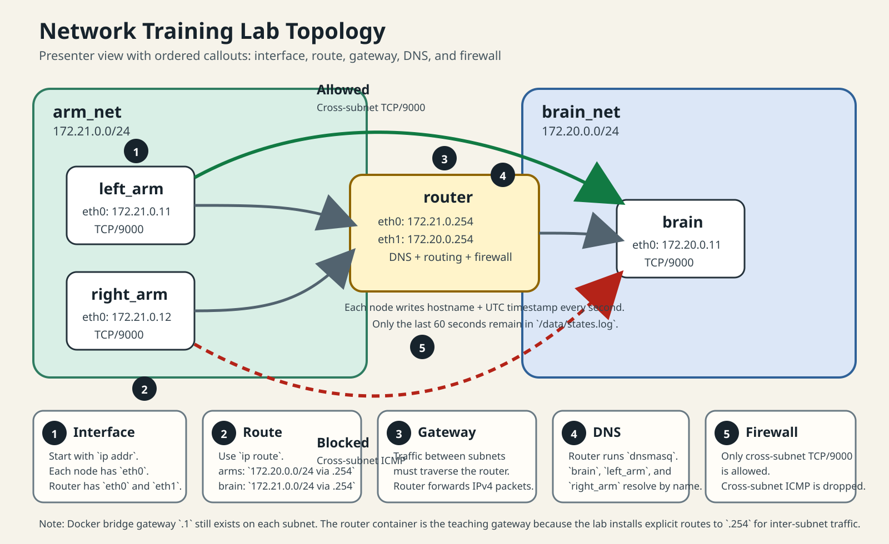

Print-oriented notes for a Docker Compose networking session covering interfaces, layer 2 neighbors, routes, gateway behavior, DNS, firewall policy, and packet capture.

Docker still has its own bridge endpoint on each subnet at `.1`. In this lab, `.254` is the teaching gateway because the nodes install explicit routes to the router.
docker compose exec left_arm bash ifaces ip neigh show dev eth0 arping -I eth0 right_arm arping -I eth0 172.21.0.254 l2-neighbors
`172.21.0.12` (`right_arm`), `172.21.0.254` (`router`), and Docker’s bridge endpoint `172.21.0.1`.
routes ip route get 172.20.0.11
Expected route: `172.20.0.0/24 via 172.21.0.254`
routes ip route get 172.21.0.11
Expected route: `172.21.0.0/24 via 172.20.0.254`
Layer 2 tells you whether the destination is local. The route table tells you which next hop to use when it is not.
docker compose exec left_arm bash dns nslookup brain check-router check-brain
Arm side uses `172.21.0.254`. Brain side uses `172.20.0.254`.
Cross-subnet TCP to port `9000`
Same routes and same DNS still apply
Cross-subnet ICMP such as `ping brain`
docker compose exec router bash demo-reset iptables -vnL FORWARD iptables -S FORWARD
docker compose exec router bash sniff-9000 docker compose exec left_arm bash sniff-brain printf "hello\n" | nc brain 9000